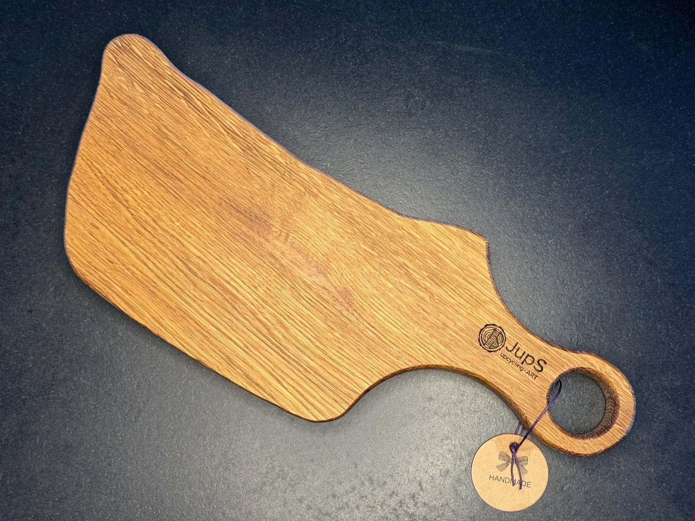
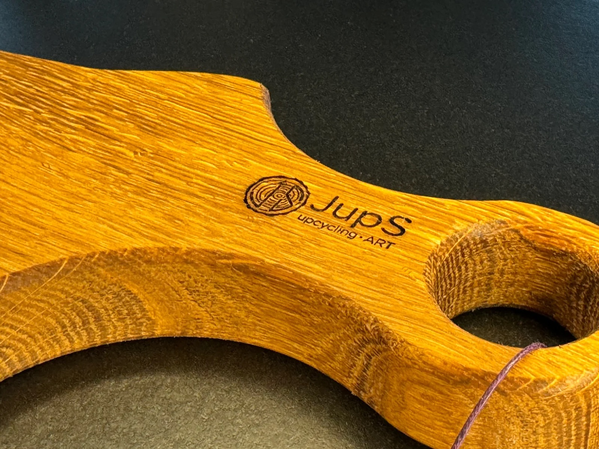

Bretter · Handgefertigtes Unikat
ab 45 €
Inkl. Versand. Preis inkl. MwSt.; aufgrund des Kleinunternehmerstatus wird gemäß § 19 UStG die MwSt. in der Rechnung nicht ausgewiesen.
oder direkt an jups.upcycling@gmail.com
Handgefertigte Schneidebretter aus massivem, altem Eichenholz mit einzigartiger Maserung – Unikate für kulinarische Genussmomente.
Das Holz wird gesägt, mehrfach geschliffen und mit lebensmittelechtem Sonnenblumenöl behandelt – nicht lackiert.
Verschiedene Abmessungen verfügbar – fragen Sie einfach per E-Mail an, welche Bretter gerade vorrätig sind.
Nicht spülmaschinenfest – bitte nur von Hand reinigen und gelegentlich leicht einölen.
Holz ist ein Naturprodukt: Kleine Unebenheiten, Lunker oder Verfärbungen sind keine Qualitätsmängel, sondern Teil des Charakters.